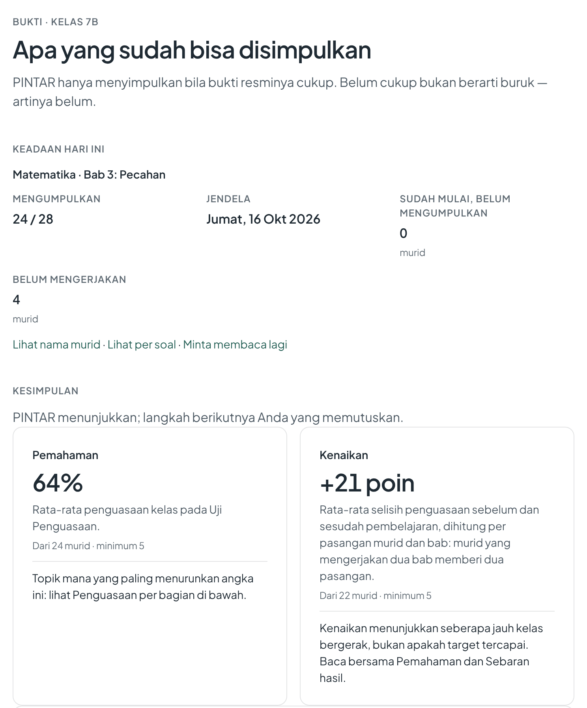
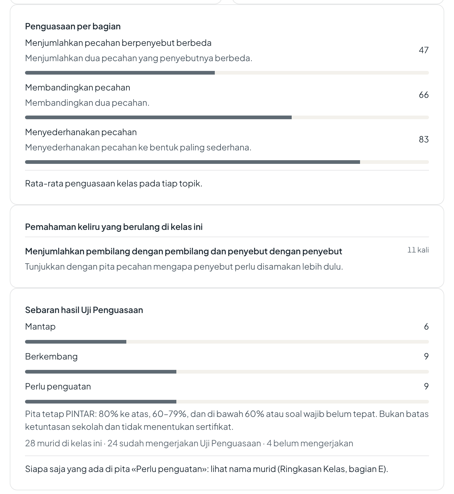
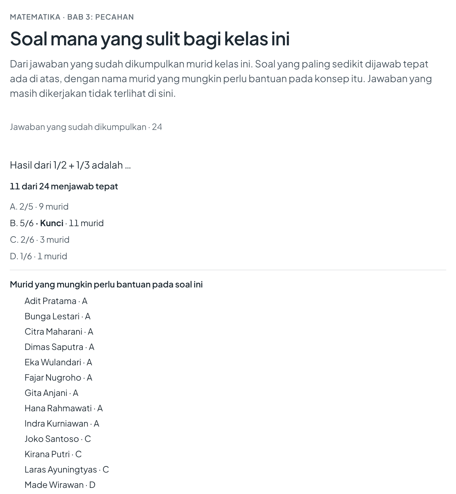
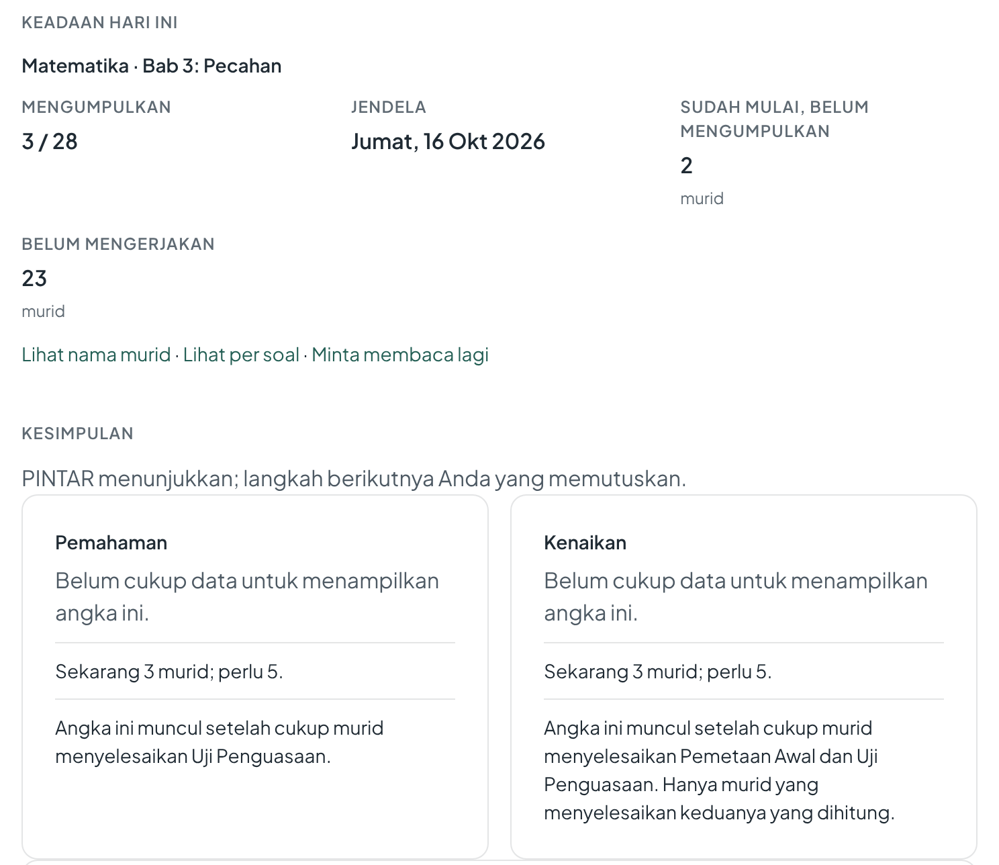

Bab 3 · 15 Hal yang Paling Sering DilakukanTugas 12
Tugas 12 · Guru
Membaca ringkasan hasil belajar seluruh kelas
Setelah murid mengumpulkan Uji Penguasaan, PINTAR merangkum apa yang sudah dan belum dikuasai kelas Anda. Tugas ini menunjukkan cara membacanya, cara mengenali bukti yang belum cukup, dan cara sampai pada keputusan tentang apa yang akan Anda ajarkan berikutnya.
Untuk siapa
Guru yang mengajar kelas itu. Kepala departemen membaca ringkasan yang serupa di halaman «Pimpinan»9.4.
Tujuan
Mengetahui bagian mana yang sudah kuat, bagian mana yang belum, kesalahan pikir apa yang paling sering muncul, dan murid mana yang mungkin perlu bantuan.
Kelas Anda sudah mendapat materi, dan muridnya sudah mengerjakan Uji Penguasaan Tugas 7, Tugas 10.
Paling tidak lima murid sudah mengumpulkan. Jika belum, angka kelas belum ditampilkan (lihat Jika ada kendala).
Langkah-langkah
Buka kelas Anda
Pilih «Mengajar», lalu pilih kelas yang ingin Anda periksa.
Pilih «Lihat bukti»
Tombol ini ada di halaman kelas, bersama «Siapkan materi», «Uji Cepat», dan «Ringkasan Kelas». Halaman yang terbuka berjudul «Apa yang sudah bisa disimpulkan».
Periksa dulu siapa yang sudah mengumpulkan
Di «Keadaan hari ini», setiap asesmen menunjukkan tiga hitungan: «Mengumpulkan», «Sudah mulai, belum mengumpulkan», dan «Belum mengerjakan». Semua angka di bawahnya hanya berasal dari jawaban yang sudah dikumpulkan. Untuk melihat siapa saja yang belum, pilih «Lihat nama murid».
Gambar 12.1, nomor 1 dan 2.
Draf · contoh tata letak, belum untuk dibagikan1
Tugas 12Membaca ringkasan hasil belajar seluruh kelas
Baca «Kesimpulan», mulai dari dua angka utama
Setiap angka datang bersama artinya, jumlah murid yang menjadi dasarnya, dan minimumnya. Angka di sini adalah petunjuk, bukan keputusan; layar sendiri mengatakan: «PINTAR menunjukkan; langkah berikutnya Anda yang memutuskan.»
Gambar 12.1, nomor 345.

Gambar 12.1«Lihat bukti», bagian atas.
Siapa yang sudah mengumpulkan, sedang mengerjakan, dan belum mengerjakan.
Jalan ke nama murid, ke jawaban per soal, dan ke «Minta membaca lagi».
PINTAR menunjukkan; Anda yang memutuskan.
Pemahaman: rata-rata penguasaan kelas pada Uji Penguasaan. Dasarnya 24 murid; minimum 5.
Kenaikan: seberapa jauh kelas bergerak sejak Pemetaan Awal. Hanya murid yang mengerjakan keduanya yang dihitung (22). Tidak menunjukkan apakah target tercapai.
2Data contoh: sekolah, kelas, dan nama murid fiktif
Bab 3 · 15 Hal yang Paling Sering DilakukanTugas 12
Temukan bagian yang paling lemah
Di «Penguasaan per bagian», bagian dengan angka terendah ada di paling atas.
Lihat kesalahan pikir yang berulang
«Pemahaman keliru yang berulang di kelas ini» menyebut kesalahan pikir yang sama dan saran penanganannya.
Baca sebaran hasil
«Sebaran hasil Uji Penguasaan» menunjukkan berapa murid berada di tiap pita, dan berapa yang belum mengerjakan.
Gambar 12.2, nomor 678.

Gambar 12.2«Lihat bukti», bagian bawah.
Satu baris per tujuan pembelajaran, dengan angka 0–100. Yang terlemah di atas.
Kesalahan pikir yang berulang, berapa kali muncul, dan saran penanganan dari penyusun materi. Pola yang baru terlihat pada sedikit murid tidak dicantumkan.
Tiga pita tetap PINTAR: «Mantap» (80% ke atas), «Berkembang» (60–79%), «Perlu penguatan» (di bawah 60%, atau soal wajib belum tepat). Pita bukan batas ketuntasan sekolah dan tidak menentukan sertifikat. Nama murid per pita ada di «Ringkasan Kelas», bagian E.
Draf · contoh tata letak, belum untuk dibagikan3
Tugas 12Membaca ringkasan hasil belajar seluruh kelas
Buka «Lihat per soal»
Kembali ke «Keadaan hari ini» dan pilih «Lihat per soal» pada asesmen itu. Halaman «Soal mana yang sulit bagi kelas ini» terbuka.
Perhatikan pilihan salah yang dipilih banyak murid. Biasanya itu tanda satu kesalahan pikir yang sama, petunjuk yang lebih berguna daripada jumlah jawaban benar saja.
Gambar 12.3, nomor 1 sampai 5.

Gambar 12.3«Lihat per soal», soal tersulit di atas.
Soal yang paling sedikit dijawab tepat ada di atas.
Jumlah lembar jawaban yang sudah dikumpulkan.
Berapa murid yang menjawab tepat.
Setiap pilihan dengan jumlah murid; «Kunci» menandai jawaban benar.
Murid yang mungkin perlu bantuan, dengan pilihan yang mereka ambil.
4Data contoh: sekolah, kelas, dan nama murid fiktif
Bab 3 · 15 Hal yang Paling Sering DilakukanTugas 12
Putuskan langkah berikutnya
Keputusan ada pada Anda. Yang dapat Anda lakukan di PINTAR: «Minta membaca lagi» untuk murid dan pelajaran yang Anda pilih («Hasil murid tidak berubah, dan tidak ada tes baru.»), «Uji Cepat» untuk memeriksa pemahaman lagi, atau «Siapkan materi» untuk melanjutkan. Mengajarkan ulang di kelas tidak memerlukan tombol apa pun.
Diagram D-05
Dari hasil asesmen ke langkah mengajar berikutnya
{{D05}}
Diagram D-05 dalam kata-kata
Murid mengumpulkan Uji Penguasaan; PINTAR mencatat jawaban resminya.
Anda membuka «Lihat bukti».
Jika angka belum tampil, buktinya belum cukup. Itu bukan hasil buruk. Jangan menyimpulkan dulu; tunggu lebih banyak murid mengumpulkan.
Jika angka sudah tampil, baca «Kesimpulan» dari yang umum ke yang khusus.
Buka «Lihat per soal» untuk soal yang sulit dan pilihan salah yang sering diambil.
Anda memutuskan: mengajarkan ulang, meminta membaca lagi, memeriksa dengan Uji Cepat, atau melanjutkan.
PINTAR mencatat bukti baru, dan siklusnya berulang.
Draf · contoh tata letak, belum untuk dibagikan5
Tugas 12Membaca ringkasan hasil belajar seluruh kelas
Hasilnya
Anda tahu bagian mana yang sudah kuat dan mana yang belum, kesalahan pikir apa yang paling sering muncul, dan siapa yang mungkin perlu bantuan. Atau Anda tahu dengan pasti bahwa buktinya belum cukup, dan apa yang akan membuat angkanya muncul.
Contoh di kelas
Bu Ratna dan Bab 3: Pecahan
Bu Ratna mengajar Matematika di Kelas 7B. Uji Penguasaan Bab 3: Pecahan ditutup hari Jumat. Senin pagi ia membuka «Lihat bukti».
24 / 28mengumpulkan
64%Pemahaman
+21 poinKenaikan
Bagian terlemah: Menjumlahkan pecahan berpenyebut berbeda, 47. Kesalahan pikir yang berulang: menjumlahkan pembilang dengan pembilang dan penyebut dengan penyebut, 11 kali. Soal 1/2 + 1/3: hanya 11 dari 24 menjawab tepat; 9 murid memilih 2/5.
Yang ia lihat
Kelas bergerak: Kenaikan +21 poin dari 22 murid.
Membandingkan dan menyederhanakan pecahan cukup kuat (66 dan 83).
Menjumlahkan pecahan berpenyebut berbeda tertinggal di 47.
9 murid berada di pita «Perlu penguatan».
Artinya
Jawaban 2/5 untuk 1/2 + 1/3 cocok dengan kesalahan pikir yang tercatat: pembilang dan penyebut dijumlahkan langsung.
Masalahnya ada pada satu cara berpikir, bukan pada seluruh bab.
Yang belum dapat disimpulkan
Empat murid belum mengerjakan. Angka ini mewakili 24 murid, bukan 28.
Kenaikan hanya dihitung dari 22 murid yang mengerjakan Pemetaan Awal dan Uji Penguasaan.
Angka tidak menjelaskan mengapa seorang murid memilih 2/5. Untuk itu, Bu Ratna perlu bertanya.
Pita bukan nilai rapor dan bukan batas ketuntasan sekolah.
Yang mungkin ia lakukan
Mengajarkan ulang penjumlahan pecahan dengan pita pecahan, seperti saran penanganan di layar.
«Minta membaca lagi»: memilih murid yang perlu, dan pelajaran tentang menyamakan penyebut.
Membuka «Lihat nama murid» untuk mencari tahu mengapa empat murid belum mengerjakan.
Seminggu kemudian, «Uji Cepat» dengan beberapa soal penjumlahan pecahan.
Bu Ratna boleh memilih langkah lain. PINTAR menunjukkan buktinya; keputusan tetap pada guru.
6Data contoh: sekolah, kelas, dan nama murid fiktif
Bab 3 · 15 Hal yang Paling Sering DilakukanTugas 12
Tugas 12
Jika ada kendala
Situasi yang paling sering terjadi adalah bukti yang belum cukup. PINTAR tidak menampilkan angka yang dasarnya terlalu kecil. Sebagai gantinya, layar menulis berapa murid yang sudah ada dan berapa yang diperlukan.

Gambar 12.4Bukti belum cukup: baru 3 dari 28 murid mengumpulkan.
Baru tiga murid yang mengumpulkan.
«Belum cukup data untuk menampilkan angka ini.» Ini bukan hasil buruk; artinya belum.
Seberapa jauh lagi: «Sekarang 3 murid; perlu 5.» Di bawahnya tertulis kapan angka itu muncul.
Mengapa begini?
Angka dari dua atau tiga murid mudah berubah dan mudah menyesatkan. Karena itu PINTAR menunggu sampai dasarnya cukup, lalu selalu menulis dari berapa murid sebuah angka dihitung. Selama menunggu, Anda tetap dapat melihat siapa yang sudah dan belum mengumpulkan, dan membuka jawaban yang sudah masuk di «Lihat per soal».
Draf · contoh tata letak, belum untuk dibagikan7
Tugas 12Membaca ringkasan hasil belajar seluruh kelas
Yang Anda lihat
Artinya, dan yang dapat Anda lakukan
Baca
«Belum cukup data untuk menampilkan angka ini.»
Terlalu sedikit murid yang sudah mengumpulkan. Jangan menyimpulkan dulu. Angka muncul sendiri setelah cukup murid mengumpulkan. Lihat siapa yang belum dengan «Lihat nama murid».
Murid yang sedang mengerjakan tidak terlihat di «Lihat per soal».
Halaman ini hanya memakai jawaban yang sudah dikumpulkan: «Jawaban yang masih dikerjakan tidak terlihat di sini.» Lihat lagi setelah mereka mengumpulkan.
Seorang guru dapat sampai ke tugas ini dari empat arah: istilah yang ia lihat di layar, perannya, pertanyaannya sendiri, atau gejala yang ia alami. Entri yang menuju Tugas 12 ditandai.
Indeks AAlfabetis
KenaikanTugas 12 · 10.7
Kesimpulan, di «Lihat bukti»Tugas 12
Lihat buktiTugas 12 · 10.7
Lihat per soalTugas 12 · 10.7
Pemahaman (angka kelas)Tugas 12 · 9.5
Pemahaman keliru yang berulangTugas 12 · 11.6
Penguasaan per bagianTugas 12
Pita hasillihat Sebaran hasil
Sebaran hasil Uji PenguasaanTugas 12 · 9.5
siswalihat Murid
Indeks BMenurut peran: Guru
Tugas 7 · Menyediakan materiBab 3
Tugas 10 · Uji Cepat atau Uji PenguasaanBab 3
Tugas 11 · Hasil seorang muridBab 3
Tugas 12 · Ringkasan seluruh kelasBab 3
Tugas 13 · Membantu muridBab 3
Membaca bukti kelas10.7
Memutuskan langkah berikutnya10.9
Indeks C"Saya ingin…"
…tahu bagian mana yang belum dikuasai kelas sayaT12 · L5
…tahu soal mana yang paling sulitT12 · L8
…tahu siapa yang perlu bantuanT12 · L8 · T13
…meminta murid membaca ulangT12 · L9 · 10.9
…memeriksa lagi setelah mengajar ulang10.5
Indeks DMengatasi masalah, menurut gejala
«Belum cukup data untuk menampilkan angka ini.»T12 · Kendala
«Sekarang 3 murid; perlu 5.»T12 · Kendala
Kenaikan belum tampilT12 · Kendala
«Lihat per soal» tidak adaT12 · Kendala
«Belum ada jawaban yang dikumpulkan…»T12 · Kendala
Di edisi digital, setiap rujukan dapat diklik. Di edisi cetak, rujukan memakai nomor halaman setelah tata letak buku selesai. Singkatan: T = Tugas, L = Langkah.
Draf · contoh tata letak, belum untuk dibagikan9
Reviewer notesNot part of the handbook
For the owner · removed before publication
How this sample was made, and what to check
The screenshots
Real screens, fictional data. SS-32 («Lihat bukti») and SS-33 («Lihat per soal») are drawn by the product's own components, its compiled stylesheet and its screen-text table, from main at commit 1b1cada8. Only the database reads were replaced with a fictional class: SMP Peragaan Nusantara, Kelas 7B, 28 learners, Matematika Bab 3: Pecahan. This is the same method Daisy uses for her screen reviews.
Not a running app. The local database stack cannot start in this work environment, so the pages were rendered rather than clicked through. The final set will be captured from the accepted 5.0 build on an owner-approved fixture school.
Cropped to the page body. The staff navigation is not drawn. The product footer is cropped out because it names a real person.
The figures obey the product's rules: the minimum of 5, the fixed bands, the hardest question first, and counts that add up.
Verified against the code
Every «…» string is quoted from src/lib/hle.ts.
The class page offers «Lihat bukti» beside «Siapkan materi», «Uji Cepat» and «Ringkasan Kelas».
«Lihat per soal» appears once at least one learner has submitted, and never in a professional-development class.
«Minta membaca lagi» appears after an Uji Penguasaan is submitted, and changes no result.
The minimum is 5 for the class figures. Kenaikan counts only learners who did both the Pemetaan Awal and the Uji Penguasaan. Question quality and integrity are left to the Kepala departemen.
Observations for Daisy (product, not handbook)
The same section is titled «Penguasaan per bagian» when it shows figures, but «Penguasaan per topik» (the catalogue label) when it is withheld.
In the withheld «Sebaran hasil» card, «Belum cukup data untuk menampilkan angka ini.» is said twice.
At 1280 px, «Keadaan hari ini» wraps its four counts onto two rows.
Page specification
A4. Body text 9.8 pt Plus Jakarta Sans, the product's typeface. Labels in IBM Plex Mono. Deep teal #075056 (D-192).
Screenshots are 132–140 mm wide, so the product's body text prints at about 8 pt and its smallest text at about 6.5 pt; the digital edition carries them at 2× resolution for zooming. Whether this is large enough for print is one of the things to judge. Annotations are numbered teal circles with thin outlines, and they match the step and legend numbers.
D-05 is SVG with a text equivalent. Shape and label carry meaning without colour, and only the teacher's box decides.
Links
Within the sample, links to steps, the diagram, the troubleshooting table and the index work.
Links to other chapters (10.7, 9.5, Tugas 11…) point to sections that exist only in the full book.
Source files
docs/handbook/contoh-tugas-12/: tugas-12.src.html, style.css, d05.svg, img/, fonts/ (OFL), render/ (screen harness), build.mjs (builds the HTML and the PDF), README.